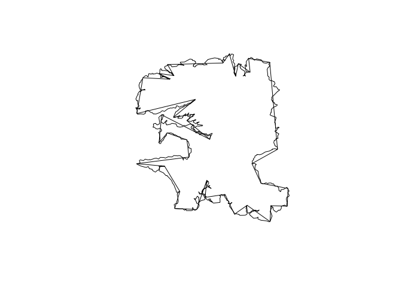
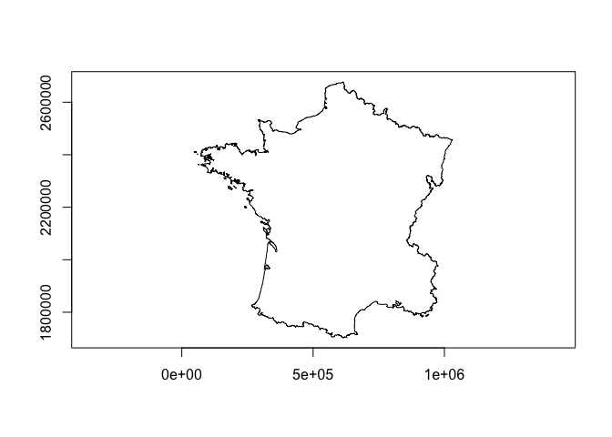
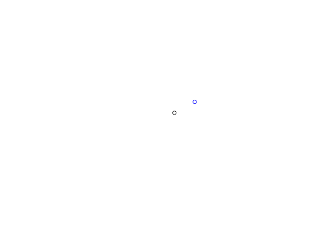
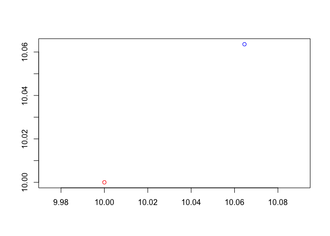
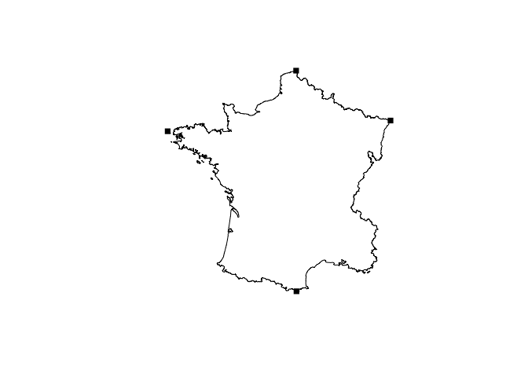
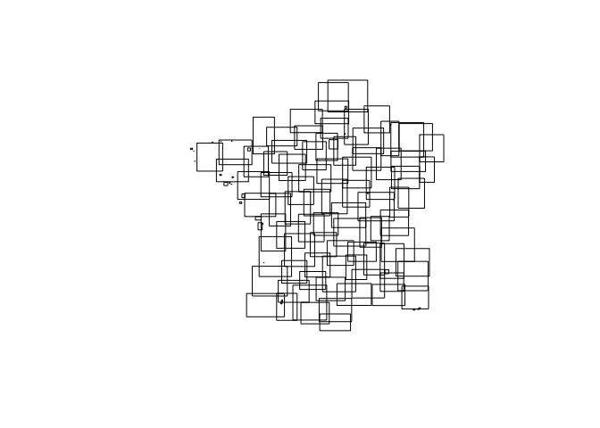
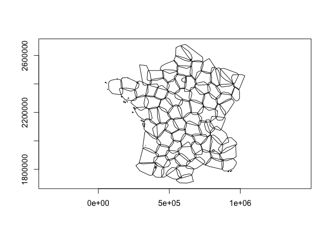

rsgeo is an interface to the Rust libraries geo-types and geo. geo-types implements pure rust geometry primitives. The geo library adds additional algorithm functionalities on top of geo-types. This package lets you harness the speed, safety, and memory efficiency of these libraries. geo-types does not support Z or M dimensions. There is no support for CRS at this moment.
# install.packages(
# 'rsgeo',
# repos = c('https://josiahparry.r-universe.dev', 'https://cloud.r-project.org')
# )
library(rsgeo)rsgeo works with vectors of geometries. When we compare this to sf this is always the geometry column which is a class sfc object (simple feature column).
# get geometry from sf
data(guerry, package = "sfdep")
polys <- guerry[["geometry"]] |>
sf::st_cast("POLYGON")
# cast to rust geo-types
rs_polys <- as_rsgeo(polys)
head(rs_polys)
#> <rs_POLYGON[6]>
#> [1] Polygon { exterior: LineString([Coord { x: 801150.0, y: 2092615.0 }, Coord...
#> [2] Polygon { exterior: LineString([Coord { x: 729326.0, y: 2521619.0 }, Coord...
#> [3] Polygon { exterior: LineString([Coord { x: 710830.0, y: 2137350.0 }, Coord...
#> [4] Polygon { exterior: LineString([Coord { x: 882701.0, y: 1920024.0 }, Coord...
#> [5] Polygon { exterior: LineString([Coord { x: 886504.0, y: 1922890.0 }, Coord...
#> [6] Polygon { exterior: LineString([Coord { x: 747008.0, y: 1925789.0 }, Coord...Cast geometries to sf
sf::st_as_sfc(rs_polys)
#> Geometry set for 116 features
#> Geometry type: POLYGON
#> Dimension: XY
#> Bounding box: xmin: 47680 ymin: 1703258 xmax: 1031401 ymax: 2677441
#> CRS: NA
#> First 5 geometries:
#> POLYGON ((801150 2092615, 800669 2093190, 80068...
#> POLYGON ((729326 2521619, 729320 2521230, 72928...
#> POLYGON ((710830 2137350, 711746 2136617, 71243...
#> POLYGON ((882701 1920024, 882408 1920733, 88177...
#> POLYGON ((886504 1922890, 885733 1922978, 88547...Calculate the unsigned area of polygons.
bench::mark(
rust = unsigned_area(rs_polys),
sf = sf::st_area(polys),
check = FALSE
)
#> # A tibble: 2 × 6
#> expression min median `itr/sec` mem_alloc `gc/sec`
#> <bch:expr> <bch:tm> <bch:tm> <dbl> <bch:byt> <dbl>
#> 1 rust 53.96µs 55.8µs 17616. 3.8KB 0
#> 2 sf 1.34ms 1.4ms 709. 786.9KB 10.7Find centroids
bench::mark(
centroids(rs_polys),
sf::st_centroid(polys),
check = FALSE
)
#> # A tibble: 2 × 6
#> expression min median `itr/sec` mem_alloc `gc/sec`
#> <bch:expr> <bch:tm> <bch:tm> <dbl> <bch:byt> <dbl>
#> 1 centroids(rs_polys) 162.61µs 203.24µs 4166. 3.8KB 14.6
#> 2 sf::st_centroid(polys) 2.34ms 2.46ms 404. 892.9KB 6.70Extract points coordinates
coords(rs_polys) |>
head()
#> x y line_id polygon_id
#> 1 801150 2092615 1 1
#> 2 800669 2093190 1 1
#> 3 800688 2095430 1 1
#> 4 800780 2095795 1 1
#> 5 800589 2096112 1 1
#> 6 800333 2097190 1 1Plot the polygons and their centroids

Calculate a distance matrix. Note that there is often floating point error differences so check = FALSE in this case.
pnts <- centroids(rs_polys)
pnts_sf <- sf::st_as_sfc(pnts)
bench::mark(
rust = distance_euclidean_matrix(pnts, pnts),
sf = sf::st_distance(pnts_sf, pnts_sf),
check = FALSE
)
#> # A tibble: 2 × 6
#> expression min median `itr/sec` mem_alloc `gc/sec`
#> <bch:expr> <bch:tm> <bch:tm> <dbl> <bch:byt> <dbl>
#> 1 rust 305µs 429.43µs 2266. 108KB 6.15
#> 2 sf 3.4ms 3.56ms 280. 351KB 2.03Simplify geometries.
x <- rs_polys
x_simple <- simplify_geoms(x, 5000)
plot(x_simple)
bench::mark(
rust = simplify_geoms(rs_polys, 500),
sf = sf::st_simplify(polys, FALSE, 500),
check = FALSE
)
#> # A tibble: 2 × 6
#> expression min median `itr/sec` mem_alloc `gc/sec`
#> <bch:expr> <bch:tm> <bch:tm> <dbl> <bch:byt> <dbl>
#> 1 rust 5.95ms 6.23ms 161. 1.91KB 2.04
#> 2 sf 7.94ms 8.29ms 121. 1.24MB 4.17Union geometries with union_geoms(). Some things sf is better at! One of which is performing unary unions of complex geometries.
plot(union_geoms(rs_polys))
bench::mark(
union_geoms(rs_polys),
sf::st_union(polys),
check = FALSE
)
#> # A tibble: 2 × 6
#> expression min median `itr/sec` mem_alloc `gc/sec`
#> <bch:expr> <bch:tm> <bch:tm> <dbl> <bch:byt> <dbl>
#> 1 union_geoms(rs_polys) 195ms 198ms 5.01 0B 0
#> 2 sf::st_union(polys) 111ms 113ms 8.91 921KB 0We can cast between geometries as well.
lns <- cast_geoms(rs_polys, "linestring")Some unions are faster when using rsgeo vectors like linestrings.
lns_sf <- sf::st_cast(polys, "LINESTRING")
bench::mark(
union_geoms(lns),
sf::st_union(lns_sf),
check = FALSE
)
#> # A tibble: 2 × 6
#> expression min median `itr/sec` mem_alloc `gc/sec`
#> <bch:expr> <bch:tm> <bch:tm> <dbl> <bch:byt> <dbl>
#> 1 union_geoms(lns) 119.7µs 175.2µs 5015. 0B 0
#> 2 sf::st_union(lns_sf) 83.5ms 84.5ms 11.8 2.46MB 2.95Find the closest point to a geometry
close_pnt <- closest_point(
rs_polys,
geom_point(800000, 2090000)
)
plot(rs_polys[1])
plot(close_pnt, pch = 15, add = TRUE)
Find the haversine destination of a point, bearing, and distance. Compare to the very fast geosphere destination point function.
bench::mark(
rust = haversine_destination(geom_point(10, 10), 45, 10000),
Cpp = geosphere::destPoint(c(10, 10), 45, 10000),
check = FALSE
)
#> # A tibble: 2 × 6
#> expression min median `itr/sec` mem_alloc `gc/sec`
#> <bch:expr> <bch:tm> <bch:tm> <dbl> <bch:byt> <dbl>
#> 1 rust 5.33µs 6.36µs 145500. 3.2KB 14.6
#> 2 Cpp 15.87µs 17.1µs 50544. 11.8MB 30.3
origin <- geom_point(10, 10)
destination <- haversine_destination(origin, 45, 10000)
plot(c(origin, destination), col = c("red", "blue"))
Find intermediate point on a great circle.
middle <- haversine_intermediate(origin, destination, 1/2)
plot(origin)
plot(destination, add = TRUE, col = "red")
plot(middle, add = TRUE, col = "blue")
Find extreme coordinates with extreme_coords()
france <- union_geoms(rs_polys)
plot(france)
plot(extreme_coords(france)[[1]], add = TRUE, pch = 15)
Get bounding rectangles
rects <- bounding_rect(rs_polys)
plot(rects)Convex hulls
convex_hull(rs_polys) |>
plot()
Expand into constituent geometries as a list of geometry vectors
expand_geoms(rs_polys) |>
head()
#> [[1]]
#> <rs_LINESTRING[1]>
#> [1] LineString([Coord { x: 801150.0, y: 2092615.0 }, Coord { x: 800669.0, y: 2...
#>
#> [[2]]
#> <rs_LINESTRING[2]>
#> [1] LineString([Coord { x: 729326.0, y: 2521619.0 }, Coord { x: 729320.0, y: 2...
#> [2] LineString([Coord { x: 647667.0, y: 2468296.0 }, Coord { x: 647777.0, y: 2...
#>
#> [[3]]
#> <rs_LINESTRING[1]>
#> [1] LineString([Coord { x: 710830.0, y: 2137350.0 }, Coord { x: 711746.0, y: 2...
#>
#> [[4]]
#> <rs_LINESTRING[1]>
#> [1] LineString([Coord { x: 882701.0, y: 1920024.0 }, Coord { x: 882408.0, y: 1...
#>
#> [[5]]
#> <rs_LINESTRING[1]>
#> [1] LineString([Coord { x: 886504.0, y: 1922890.0 }, Coord { x: 885733.0, y: 1...
#>
#> [[6]]
#> <rs_LINESTRING[1]>
#> [1] LineString([Coord { x: 747008.0, y: 1925789.0 }, Coord { x: 746630.0, y: 1...We can flatten the resultant geometries into a single vector using flatten_geoms()
expand_geoms(rs_polys) |>
flatten_geoms() |>
head()
#> <rs_LINESTRING[6]>
#> [1] LineString([Coord { x: 801150.0, y: 2092615.0 }, Coord { x: 800669.0, y: 2...
#> [2] LineString([Coord { x: 729326.0, y: 2521619.0 }, Coord { x: 729320.0, y: 2...
#> [3] LineString([Coord { x: 647667.0, y: 2468296.0 }, Coord { x: 647777.0, y: 2...
#> [4] LineString([Coord { x: 710830.0, y: 2137350.0 }, Coord { x: 711746.0, y: 2...
#> [5] LineString([Coord { x: 882701.0, y: 1920024.0 }, Coord { x: 882408.0, y: 1...
#> [6] LineString([Coord { x: 886504.0, y: 1922890.0 }, Coord { x: 885733.0, y: 1...Combine geometries into a single multi- geometry
combine_geoms(lns)
#> <rs_LINESTRING[1]>
#> [1] MultiLineString([LineString([Coord { x: 801150.0, y: 2092615.0 }, Coord { ...Spatial predicates
x <- rs_polys[1:5]
intersects_sparse(x, rs_polys)
#> [[1]]
#> [1] 1 48 50 92 94
#>
#> [[2]]
#> [1] 2 7 63 78 80 81 98 101
#>
#> [[3]]
#> [1] 3 20 27 53 77 84 94
#>
#> [[4]]
#> [1] 4 5 30 107 109
#>
#> [[5]]
#> [1] 4 5 30 48